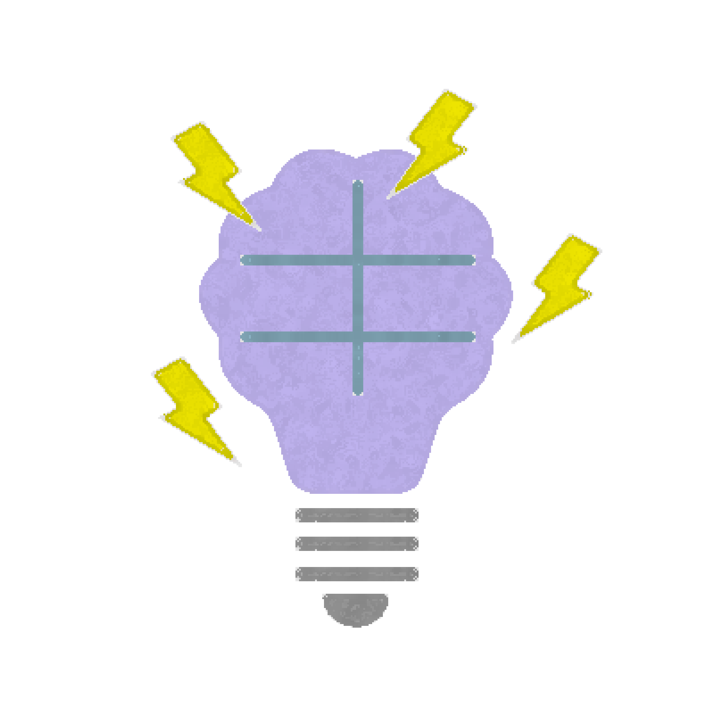

カラダへの影響
1. 2杯
カフェイン : 80mg~160mg
-
脳・神経
眠気や疲労感が減少
注意力・集中力がUP -
心臓・血管
心拍数や血圧の変化はほぼ軽微
-
胃・消化器官
胃や腸の働きが活発に、
消化を助けスッキリしやすくなる -
筋肉・運動神経

軽度に筋肉が刺激され、
持久力がわずかに向上
3. 4. 5杯
カフェイン : 240mg~400mg未満
-
脳・神経

集中力・注意力の大幅アップ
寝つきが悪くなる -
心臓・血管
心拍数の軽度増加や血圧上昇
-
胃・消化器官
胃もたれや、食欲低下
-
筋肉・運動神経

筋持久力・パフォーマンスの向上、動作が機敏に
6杯~
カフェイン : 400mg以上
-
脳・神経
集中力の低下、睡眠障害、頭痛
-
心臓・血管

高血圧・不整脈リスクがUP
心臓への負担が大きい -
胃・消化器官
胃痛・下痢・吐き気
-
筋肉・運動神経
手の震え・筋肉の痙攣
カフェイン基礎知識
飲み物別含有量